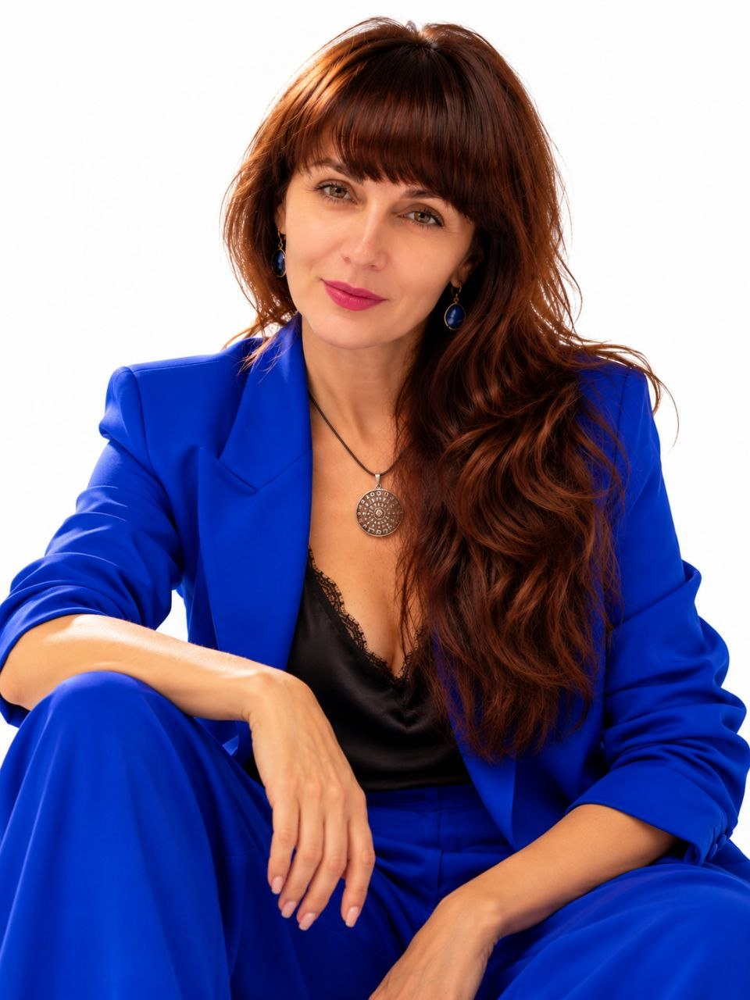
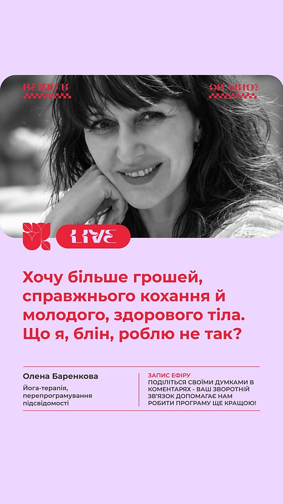
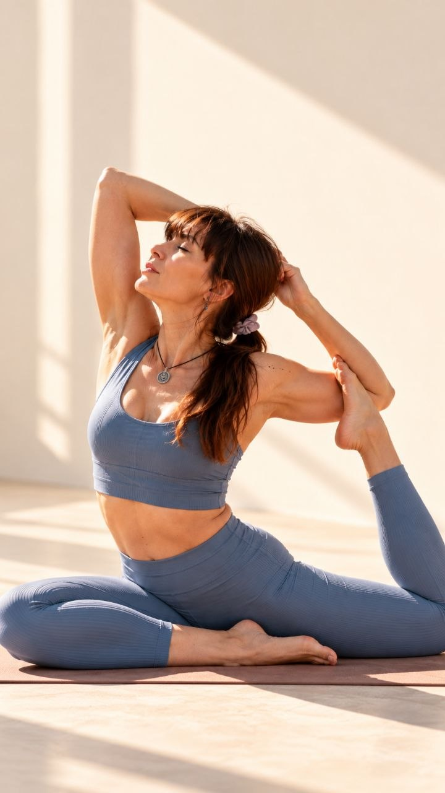
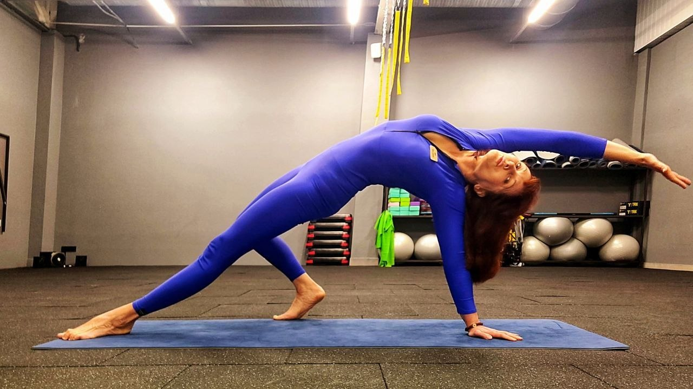
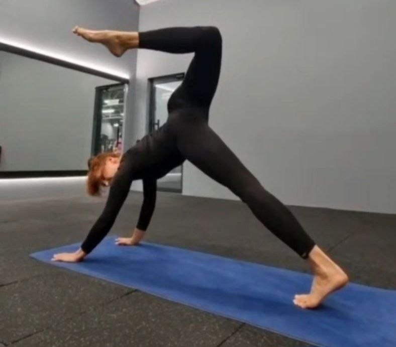

Олена Баренкова
Відновлення. Баланс. Внутрішня опора.
20 років досвіду в йозі.
Практики для тіла й свідомості, які допомагають краще розуміти себе, змінювати звичні реакції та повертати відчуття опори у власному житті.
Йога та тілесні практики • Архітактура тіла та розуму• Трансформаційна робота • Метафоричні асоціативні карти • Сесії з підсвідомістю

«Хочу більше грошей, справжнього кохання й молодого, здорового тіла. Що я, блін, роблю не так?»
28 жовтня 2026 року о 11:00
Чому ми так багато хочемо змінити у своєму житті, багато знаємо, стараємося, але часом знову повертаємося до тих самих ситуацій?
Поговоримо про внутрішні установки, повторювані сценарії, тіло та те, як наш внутрішній стан може впливати на рішення й вибір.
Я поділюся своїм підходом до тілесних і трансформаційних практик, а також покажу, з чого можна почати зміни.

Гнучкість тіла — свобода руху й ясність розуму
29 жовтня 2026 року · Онлайн
Тіло може бути не лише сильним, а й гнучким, рухливим і вільним від зайвої напруги.
Запрошую тебе на спеціальну онлайн-практику з йоги, присвячену здоровій спині, гнучкості тіла та усвідомленому руху.
Під час практики ми приділимо увагу:
Адреса: вул. Монастирська 41
📅 Вт Чт - 18:00-19:00 🕐
📅 Сб - 10:00-11:00 🕐
Переглянути галерею Записатися
Тобі не потрібно нікуди їхати
Просто розстели килимок і приєднуйся 💗
Займайся там, де ти є ✨
Живі онлайн-практики разом зі мною у реальному часі
ПН · СР · ПТ
09:00 / 19:00ВТ · ЧТ
11:00 / 18:00СБ
10:00✨ Живі заняття
✨ Підходить для будь-якого рівня
✨ Відчуття, ніби ти в залі
Приєднання до трансляції по посиланню лише за попереднім записом

Коли немає сил і енергії - це не слабкість, це виснаження.
Цей курс допоможе м'яко відновити ресурс, заспокоїти стан і повернути відчуття життя через тіло та дихання.
Для тебе, якщо є втома, апатія і бажання знову відчути легкість і внутрішню опору.
Ти не лівнива. Ти виснажена. І це можна змінити.
Пиши "Хочу курс"
Іноді відповідь вже є всередині тебе.
Потрібно лише побачити її...
Метафоричні картки - це м'який і глибокий спосіб почути себе, розплутати внутрішні стани та знайти свій шлях без тиску і логіки.
Підходить навіть якщо ти не знаєш з чого почати
Онлайн або офлайн